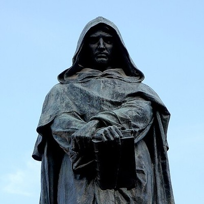
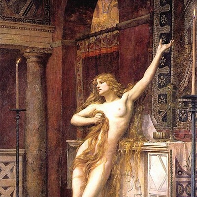

Faith Wars
You’ve scrolled through eight wars — for your technology, your money, your history, your mind, your energy, your information, your body, and your sky. This is the ninth. The oldest. The one that was running before any of the others had names. Every war in this series took something from you and replaced it with a mediated version controlled by an institution. This scroll traces the original template — the moment humanity’s direct access to spiritual experience was severed and replaced with authorized intermediaries. Not because God is real or not real. Because access is the oldest currency — and someone has been charging admission for seventeen centuries.
What You Think You Know
For decades, U.S. church attendance declined while “spiritual but not religious” surged as one of the fastest-growing categories in America. Evangelicals fight culture wars on television. The papacy maintains official Instagram and X accounts. Megachurches run fog machines and Spotify playlists. Religion, in the public narrative, is either dying or weaponized — a relic or a bludgeon.
That’s the surface. Underneath it is a question nobody on cable news will ask: not whether God exists, but who controls the door between you and the experience of finding out for yourself. Because for seventeen centuries, that door has had a lock on it. And the lock wasn’t put there by atheists.
Pew Research Center’s third Religious Landscape Study (published February 26, 2025; n ≈ 37,000) placed religiously unaffiliated Americans (“nones”) at 29% and Christians at 62% — confirming the multi-decade decline from 2007 (78% Christian) and 1970 (<5% nones), while documenting that the drop largely leveled off between 2019 and 2024 rather than continuing in a straight downward line.
This scroll isn’t about belief. It isn’t about whether any religion is true or false. It’s about infrastructure. Who built the system that sits between human beings and direct spiritual experience? When was it built? What did it replace? And what does the blueprint look like when you lay it next to the eight prior wars you’ve already scrolled through?
The Interface
This isn’t about faith. It’s about access. Who holds the key to the door between you and direct experience — and when did they change the locks?
The Severance
For the first three centuries after the death of Jesus of Nazareth, there was no single Christian church. There were dozens of communities across the Mediterranean, each with different texts, different practices, different understandings of what the teacher had meant. Some believed in a hierarchy of priests. Others believed every person had direct access to the divine — that the kingdom of heaven was already inside you, and no intermediary was required. The Greek word for this direct knowing was gnosis. The people who practiced it were called Gnostics.
They were about to be erased.
The Gospel of Thomas — one of the buried texts — records 114 sayings of Jesus with no crucifixion, no resurrection, no priesthood needed. Saying 3 (trans. Thomas O. Lambdin): “The kingdom is inside of you, and it is outside of you. When you come to know yourselves, then you will become known.” Saying 70 (trans. Marvin Meyer): “If you bring forth what is within you, what you bring forth will save you. If you do not bring forth what is within you, what you do not bring forth will destroy you.”
Patristic bishops evaluated texts by apostolicity, antiquity, widespread use, and orthodoxy — and in practice, orthodoxy functioned as an institutional compatibility filter. Direct experience doesn’t need a priest. And a church without a congregation is just a building.
The texts, the geography, the ground itself — all constructed, all controlled. Open-access spirituality consolidated into a single authorized institution.
The Burning
The canon was decided. The institution was built. But the impulse toward direct experience didn’t stop. Across the next sixteen centuries, dissident movements, mystics, indigenous traditions, and wandering teachers kept emerging who rejected institutional permission to access the divine. Again and again, movements that bypassed authorized mediation were not debated — they were crushed.
And if you track the method of destruction across cultures and centuries, a pattern emerges that has nothing to do with theology and everything to do with access control.


Volume 2 of the U.S. Department of the Interior’s Federal Indian Boarding School Initiative (July 2024) expanded the official count from 408 to 417 federal institutions across 37 states and confirmed at least 973 Indigenous student deaths across 65 burial sites, followed by President Joe Biden’s formal federal apology on October 25, 2024. In Canada, the National Centre for Truth and Reconciliation continues to document more than 4,100 archival student deaths; at the former Kamloops school, the 2021 ground-penetrating radar findings remain classified as unexcavated subsurface anomalies as of November 2026 pending community-led decisions.
Sixteen centuries. Four continents. The target was never a specific belief. It was anyone who said you don’t need permission.
The pattern isn’t theological. It’s operational. Across sixteen centuries and four continents, the target was never a specific belief. It was anyone who said you don’t need permission.
The Replacement
You thought this was about ancient history. Councils and crusades and codex burnings. Something that happened to other people in other centuries.
It isn’t. The same pattern — centralize authority, control the interface, destroy alternatives — was still running at the time of this writing (April 2026). It just traded robes for stadium seating and an estimated $71 billion a year in U.S. religious tax exemptions. The institution changed its clothes. The lock on the door didn’t move.
Following the Archdiocese of Los Angeles’s $880 million settlement in October 2024 — pushing Los Angeles payouts alone past $1.5 billion — alongside ongoing diocesan Chapter 11 resolutions nationwide, cumulative U.S. Catholic sexual abuse settlements have surpassed $5 billion.
Pope Francis died on April 21, 2025, at age 88. On May 8, 2025, the conclave elected American-born Cardinal Robert Francis Prevost as Pope Leo XIV (inaugurated May 18, 2025). While the Holy See has published audited annual IOR statements since 2013 and consolidated budgets since 2020–2021, Leo XIV adjusted Francis-era asset-management mandates in late 2025 to rebalance oversight between the IOR and Vatican administrative offices; transparency over legacy real estate, Peter’s Pence allocations, and clerical-abuse accountability remains under active scrutiny.
The institution that burned the mystics now runs fog machines. The lock on the door didn’t break. It got a marketing budget.
The Pipeline (Scroll 010) will show what waits at the exit when people leave institutional religion — a managed replacement of crystals, apps, and intelligence-seeded counterculture. This is what they were leaving: a $71 billion tax-exempt U.S. religious sector largely shielded from Form 990 financial disclosure, alongside a historic Church that covered up child abuse for decades, issued colonial bulls authorizing enslavement, and resisted independent financial reporting until post-2013 banking scandals forced partial reform. The people leaving aren’t confused. They saw the invoice.
The institution that burned the mystics now runs fog machines. The institution that burned the libraries now livestreams on YouTube. The lock on the door didn’t break. It got a marketing budget.
The Template
Nine wars so far — and two more chapters ahead to complete this eleven-scroll volume. Technology, money, space, consciousness, energy, information, health, atmosphere, and now faith, followed by the managed replacement for seeking and the organizational chart behind them all. Each one documents a different system of control. Each one shows the same architecture: centralize the authority, control the interface, destroy anyone who offers a direct alternative, classify what you find, and replace what you suppress.
That architecture wasn’t invented by the CIA. It wasn’t invented by the Federal Reserve. It wasn’t invented by Standard Oil or the Council on Foreign Relations (CFR) or the Flexner Report. It was invented here. In the oldest war. The one that taught every other war how to work.
The Blueprint
Nicaea → Jekyll Island → Flexner Report → Operation Mockingbird → MKULTRA → the same architecture, rebuilt in every domain.
Every war in this series used the same five moves: centralize, authorize, destroy, classify, replace. The Faith Wars template is the original. The other wars are franchises.
The Reformation looked like liberation — but it replaced one intermediary (the Pope) with another (the pastor and the printed Bible). Standard Oil was “broken up” into 34 companies that merged back into 3. As The Pipeline (Scroll 010) will trace next, the New Age market replaced institutional religion with a managed pipeline of crystals, apps, and intelligence-seeded counterculture. Each time, the door stays locked. The lock just gets a new brand.
Programs don’t disappear. They get sacraments. Intermediaries don’t retire. They get rebranded. And the door between you and direct experience has been guarded by the same architecture for seventeen centuries — whether the guard wears a cassock, a lab coat, or a fog machine.
The Door
Nine wars so far — and two more chapters ahead to complete the eleven-scroll arc. One question. Who controls the door?
The door to your technology (AI Wars). The door to your money (Money Wars). The door to your history (Space Wars). The door to your consciousness (Mind Wars). The door to your energy (Oil Wars). The door to your information (Media Wars). The door to your body (Body Wars). The door to your sky (Sky Wars). Ahead lie the door to your seeking (The Pipeline, Scroll 010) and the organizational chart behind every door (The Web, Scroll 011).
And behind all of them: the oldest door. The one between you and direct experience. The one that was locked first. The one that taught every other lock how to work.
Nine wars read, two chapters ahead. One architecture. One original severance. The door was never locked. You were just told it was.
What Was Established
This scroll didn’t preach. It didn’t tell you what to believe. It laid a timeline — from Nicaea to Nag Hammadi, from the Cathars to the megachurch, from the Inquisition to the Index to the Vatican Archive — and let the pattern speak.
The pattern says: every institution that promises to connect you to the divine eventually becomes more interested in protecting itself than in keeping the connection open. And every system documented across the rest of this series follows the same blueprint — centralize, authorize, destroy, classify, replace — that was first perfected here. In the oldest war. Against the oldest door.
Nearly three in ten Americans (29%, per Pew’s February 2025 Religious Landscape Study) had walked away from organized affiliation by the time of this writing (April 2026). They didn’t stop seeking. They stopped paying the toll. And the door they’re looking for — the one between themselves and direct experience — was never locked.
You were just told it was.
The door was never locked. You were just told it was.
Nine wars so far. One architecture. Every war documented in this series used the same five moves: centralize, authorize, destroy, classify, replace. The Faith Wars template is the original. The other eight are franchises. And two more scrolls remain — one that traces the managed replacement, and one that reveals the org chart behind every door.
The door was never locked. You were just told it was.